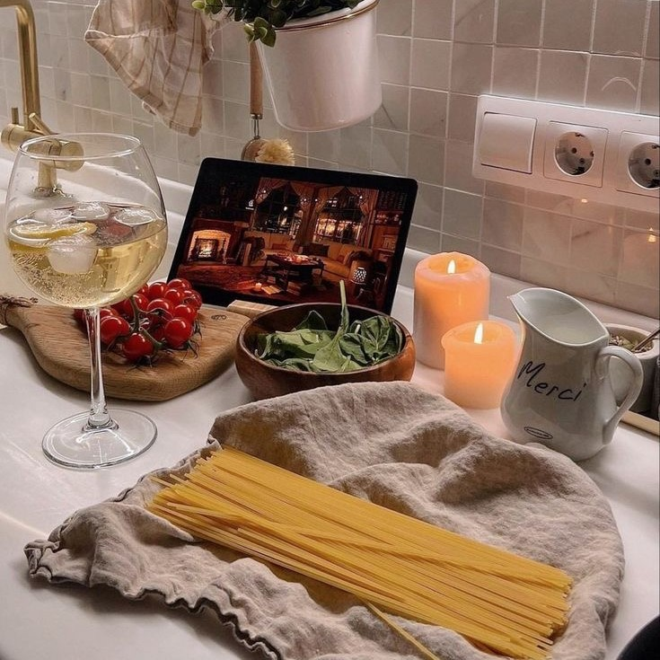
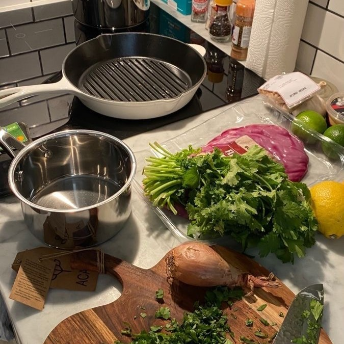

PASJA DO GOTOWANIA JEST JAK PŁOMIEŃ, KTÓRY PŁONIE W SERCU KUCHARZA, STALE PODTRZYMYWANY PRZEZ MIŁOŚĆ
DO KREATYWNEGO PROCESU TWORZENIA WYJĄTKOWYCH POTRAW. TO NIE TYLKO UMIEJĘTNOŚĆ, ALE RÓWNIEŻ WYRAZ
GŁĘBOKIEGO ZAANGAŻOWANIA I PASJI, KTÓREJ FUNDAMENTEM SĄ RÓŻNORODNE INSPIRACJE I DOŚWIADCZENIA.
OSOBA Z PRAWDZIWĄ PASJĄ DO GOTOWANIA NIE PO PROSTU GOTUJE, LECZ EKSPLORUJE. KAŻDA NOWA POTRAWA TO
PODRÓŻ, KTÓREJ CELEM JEST ODKRYCIE NOWYCH SMAKÓW, TECHNIK I SKŁADNIKÓW. ZACIERAJĄ SIĘ GRANICE MIĘDZY
KUCHNIĄ A SZTUKĄ, PONIEWAŻ PASJONAT GOTOWANIA WIDZI POTENCJAŁ W KAŻDYM SKŁADNIKU, KAŻDYM NOŻU,
GARNKU CZY PŁOMIENIU GAZOWYM. TA PASJA NIE ZNA GRANIC CZASOWYCH. NIE MA ZNACZENIA, CZY JEST TO
CHWILA WŚRÓD PRZYJACIÓŁ, CZY DŁUGIE
GODZINY SPĘDZONE W KUCHNI, EKSPERYMENTUJĄC Z NOWYMI PRZEPISAMI.
DLA PASJONATA GOTOWANIA, KUCHNIA STAJE SIĘ MIEJSCEM MAGICZNYM, W KTÓRYM MOŻNA ODPRĘŻYĆ SIĘ I WYRAZIĆ
SWOJĄ KREATYWNOŚĆ. TO NIE TYLKO MIEJSCE, W KTÓRYM PRZYGOTOWUJE SIĘ POSIŁKI, ALE RÓWNIEŻ STREFA
TWÓRCZEGO ROZWOJU, GDZIE WYOBRAŹNIA KUCHARZA JEST JEDYNYM OGRANICZENIEM.
PASJA DO GOTOWANIA WYMAGA TAKŻE POŚWIĘCENIA CZASU NA NAUKĘ I DOSKONALENIE SWOICH UMIEJĘTNOŚCI. TO
NIEUSTANNY PROCES EKSPERYMENTOWANIA, UCZENIA SIĘ NOWYCH TECHNIK, POZNAWANIA RÓŻNYCH KUCHNI I
TRADYCJI KULINARNEJ, KTÓRY TRWA PRZEZ CAŁE ŻYCIE. JEDNAKŻE, NAJWAŻNIEJSZE JEST TO, ŻE PASJA DO GOTOWANIA NIE KOŃCZY SIĘ NA SAMEJ KUCHNI. PRZENOSI SIĘ
ONA NA TALERZE, NA KTÓRYCH SERWOWANE SĄ POTRAWY, I NA TWARZE OSÓB, KTÓRE MAJĄ OKAZJĘ DELEKTOWAĆ SIĘ
TYM, CO ZOSTAŁO STWORZONE Z PASJĄ.
